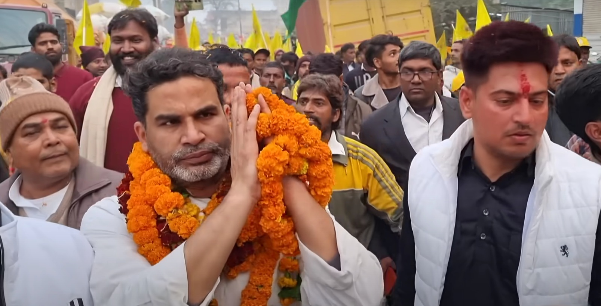
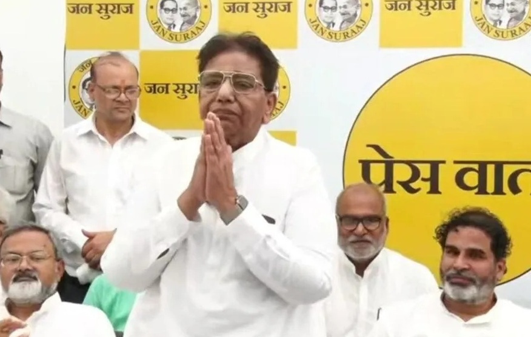
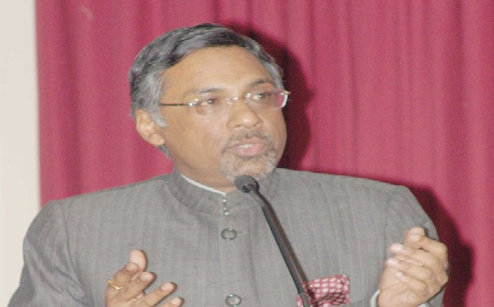
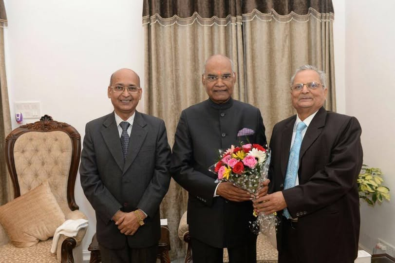
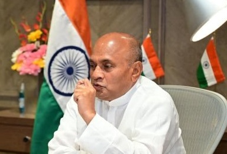

जन सुराज पार्टी नेतृत्व

प्रशांत किशोर
संस्थापक (Founder)
जन्म: 1977, बक्सर (बिहार)
पूर्व UN हेल्थ पॉलिसी एक्सपर्ट
राजनीतिक रणनीतिकार

उदय सिंह
राष्ट्रीय अध्यक्ष
जन्म: 1952, सुपौल (बिहार)
पूर्व बीजेपी सांसद
दो बार सांसद रहे

मनोज भारती
बिहार राज्य अध्यक्ष
जन्म: 1962, समस्तीपुर
पूर्व IFS अधिकारी
IIT Delhi से पढ़ाई

पवन के. वर्मा
राष्ट्रीय मुख्य प्रवक्ता
जन्म: 1953, दिल्ली
पूर्व IFS अधिकारी
लेखक और राजनीतिक विश्लेषक

यदुवंश गिरी
प्रवक्ता
राजनीतिक विश्लेषक
सामाजिक कार्यकर्ता
मीडिया प्रवक्ता

RCP सिंह
वरिष्ठ नेता
जन्म: 1958, नालंदा
पूर्व इस्पात मंत्री
पूर्व JDU नेता
संगठनात्मक संरचना
केंद्रीय समिति
- • 25 सदस्यीय समिति
- • विविध सामाजिक-राजनीतिक पृष्ठभूमि
- • किसान, शिक्षक, डॉक्टर, छात्र शामिल
- • सभी वर्गों का प्रतिनिधित्व
राज्य कोर समिति
- • 150 सदस्यीय समिति
- • रणनीतिक निर्णय लेने की भूमिका
- • चुनावी तैयारी में महत्वपूर्ण भूमिका
- • संगठन का मजबूत आधार